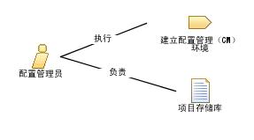

| 角色：配置管理员 |
 |
|
关系
 |
|
| 修改 | |
|---|---|
| 流程使用情况 | |
主要描述
|
CM 的功能是支持产品开发活动，这样开发人员和集成人员就有合适的工作空间来构建并测试他们的工作，并且所有工作产品都可根据需要包括在部署单元中。配置管理员角色还必须确保 CM 环境便于进行产品复审、更改和缺陷跟踪任务。该角色还负责撰写 CM 计划以及基于变更请求报告进度统计信息。 |
人员配备
| 技能 |
扮演配置管理员角色的人应该了解配置管理原则，并且最好具有使用配置管理工具的经验，或者至少接受过这方面的培训。当配置管理员的扮演者注意细节时，该角色的扮演效果最佳。 他们应充分自信，以确保开发人员不会绕过配置管理策略和过程。 |
|---|---|
| 分配方法 |
这里是分配此角色的不同方法的一些示例： |
更多信息
© Copyright IBM Corp. 1987, 2006. All Rights Reserved. |